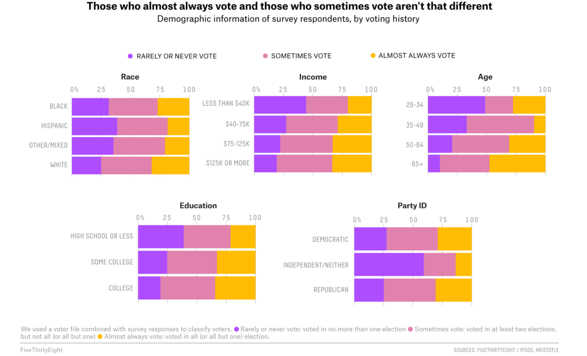
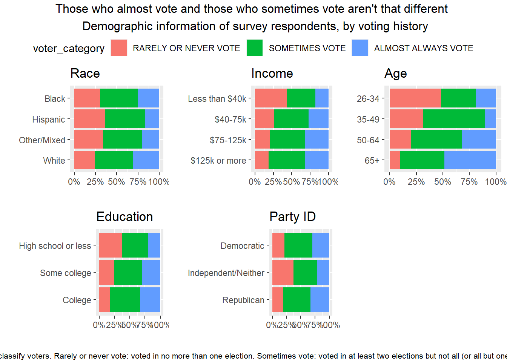

Here is the link to the data and vizualization I chose for this exercise. Below is the visual I want to recreate.
This is the link to the github page for the actual data for this original visual. I will use this data to reconstruct the visual.
Below shows the visual and this is talking about voting and dis disaggregated into different demographics. The thing that stood out to me was the presentation of the five figures together. I wanted to figure out how to do that as well as just learning how to do percent stacked barcharts with a similar legend for all of the bar charts.
 Before I can work on the data, I have to import the data. Usually I am able to hit a download button for the data set but this time when I have download, it takes me to a page on the internet that is showing the raw data. After many attempts to try to download it, I decided to use the data set via the web link and read.csv. I made sure the import was successful and all of the variables and values were place in the right places.
#I am reading in the tidyverse library.
library(tidyverse)## -- Attaching packages --------------------------------------- tidyverse 1.3.1 --## v ggplot2 3.3.5 v purrr 0.3.4
## v tibble 3.1.3 v dplyr 1.0.7
## v tidyr 1.1.3 v stringr 1.4.0
## v readr 2.0.1 v forcats 0.5.1## -- Conflicts ------------------------------------------ tidyverse_conflicts() --
## x dplyr::filter() masks stats::filter()
## x dplyr::lag() masks stats::lag()library(Hmisc)## Loading required package: lattice## Loading required package: survival## Loading required package: Formula##
## Attaching package: 'Hmisc'## The following objects are masked from 'package:dplyr':
##
## src, summarize## The following objects are masked from 'package:base':
##
## format.pval, unitslibrary(gridExtra)##
## Attaching package: 'gridExtra'## The following object is masked from 'package:dplyr':
##
## combinelibrary(scales)##
## Attaching package: 'scales'## The following object is masked from 'package:purrr':
##
## discard## The following object is masked from 'package:readr':
##
## col_factorlibrary(ggpubr)
#This is reading in the raw data
file <- "https://raw.githubusercontent.com/fivethirtyeight/data/master/non-voters/nonvoters_data.csv"
data <- read.csv(file, header = TRUE)At first when I saw this visualization, I saw multiple variables that seemed to be grouped. Upon looking at the data, it looks like there was manual grouping on some variables. So my first task was to recreate these groupings.
#This is cleaning the data. I am making categories by combining categories and making numeric values into categorical values.I also removed any missing data. This also subsets the original raw data into variables I need for this visual.
clean_data <- data %>% filter(Q30 != -1) %>% mutate(Party_ID = ifelse(Q30 == 5 | Q30 == 4 | Q30 ==3, "Independent/Neither", ifelse(Q30 == 2, "Democratic", "Republican")), age_cat = cut(ppage, breaks = c(26,35,50,65,Inf), include.lowest=TRUE, labels = c("26-34", "35-49", "50-64", "65+")), voter_category = ifelse(voter_category == "always", "ALMOST ALWAYS VOTE", ifelse(voter_category == "sporadic", "SOMETIMES VOTE", "RARELY OR NEVER VOTE")) ) %>% select(age_cat, ppage, race, income_cat, educ, Party_ID, Q30, voter_category, weight) %>% filter(age_cat != "NA")
#This is final cleaning for the data specifically for the display of values within the bar plots.
clean_data$voter_category = factor(clean_data$voter_category, levels = c("ALMOST ALWAYS VOTE","SOMETIMES VOTE", "RARELY OR NEVER VOTE"))One distinct feature of this visual was the grouping of 5 individual plots. I have not created such a visual with multiple figure displayed this way and this is one reason why I wanted to pick this visual. These figures are called percent stacked barcharts. At first when I plotted these, it looked way different then I realized within the data, there are weights per observation. This variable is used for the y-axis of each of these.
For the arrangement of the plots, I tried two ways. One way (I forgot the name of the command) produced the right arrangement but each plot had individual legends for the fill variable. Therefore, I tried to figure out another command that will let me only have one legend. This command is call ggarrange and it comes from the ggpubr package. The other issue was showing the y-axis as a percent not a decimal. So, within the scales package, there is a command called percent that I can include within each ggplot command.
The other thing I wanted to figure out was how to put a title over all of the figures just like the original. Within the ggpubr package, annotate_figure allowed me to give a title and subtitle for this visual.
#The next five ggplot commands create the specific figures. Each ggplot are all similar just using different independent variables. I included specific orders for levels of categories, changed the look of the plot to vertical to horizontal, and making the y-axis a percentage instead of decimals.
plot1=ggplot(clean_data, aes(fill=voter_category, x=race, y=weight)) + geom_bar(position="fill", stat="identity") + coord_flip() + scale_y_continuous(labels=scales::percent) +xlab(label = "") + ylab(label = "") + ggtitle("Race") + scale_x_discrete(limits = c("White","Other/Mixed","Hispanic", "Black")) + scale_fill_discrete(limit = c("RARELY OR NEVER VOTE", "SOMETIMES VOTE", "ALMOST ALWAYS VOTE"))
plot2=ggplot(clean_data, aes(fill=voter_category, x=Party_ID, y=weight)) + geom_bar(position="fill", stat="identity") + coord_flip()+ scale_y_continuous(labels=scales::percent)+xlab(label = "") + ylab(label = "") + ggtitle("Party ID") + scale_x_discrete(limits = c("Republican","Independent/Neither","Democratic")) + scale_fill_discrete(limit = c("RARELY OR NEVER VOTE", "SOMETIMES VOTE", "ALMOST ALWAYS VOTE"))
plot3=ggplot(clean_data, aes(fill=voter_category, x=age_cat, y=weight)) + geom_bar(position="fill", stat="identity") + coord_flip()+ scale_y_continuous(labels=scales::percent)+xlab(label = "") + ylab(label = "") + ggtitle("Age") + scale_x_discrete(limits = c("65+","50-64","35-49", "26-34")) + scale_fill_discrete(limit = c("RARELY OR NEVER VOTE", "SOMETIMES VOTE", "ALMOST ALWAYS VOTE"))
plot4=ggplot(clean_data, aes(fill=voter_category, x=income_cat, y=weight)) + geom_bar(position="fill", stat="identity") + coord_flip()+ scale_y_continuous(labels=scales::percent)+xlab(label = "") + ylab(label = "") + ggtitle("Income") + scale_x_discrete(limits = c("$125k or more","$75-125k","$40-75k", "Less than $40k")) + scale_fill_discrete(limit = c("RARELY OR NEVER VOTE", "SOMETIMES VOTE", "ALMOST ALWAYS VOTE"))
plot5=ggplot(clean_data, aes(fill=voter_category, x=educ, y=weight)) + geom_bar(position="fill", stat="identity") + coord_flip()+ scale_y_continuous(labels=scales::percent)+xlab(label = "") + ylab(label = "") + ggtitle("Education") + scale_x_discrete(limits = c("College","Some college","High school or less")) + scale_fill_discrete(limit = c("RARELY OR NEVER VOTE", "SOMETIMES VOTE", "ALMOST ALWAYS VOTE"))
#ggarange will show the five figure in the same position as the original visual. It also created a common legend for the fill variable.
joint_plot = ggarrange(plot1, plot4, plot3, plot5, plot2, ncol=3, nrow=2, common.legend = TRUE, legend="top",size=15 )
#annotate_figure will give the overall visual with a main title and a subtitle below the visual.
annotate_figure(joint_plot, top = text_grob("Those who almost vote and those who sometimes vote aren't that different \n Demographic information of survey respondents, by voting history"), bottom = text_grob("We used a voter file combined with survey responses to classify voters. Rarely or never vote: voted in no more than one election. \n Sometimes vote: voted in at least two elections but not all (or all but one). Almost always vote: voted in all for all but one election.", size=8))
Most of the visual looks roughly the same except the color and the size of the charts (I dont know exactly how to change the size of the figures). I tried to figure out the color but I could not figure that out. I feel like I have changed colors before but for some reason I could not figure it out for this exercise. Therefore, if anyone could suggest to me ways to change the color that would be great!